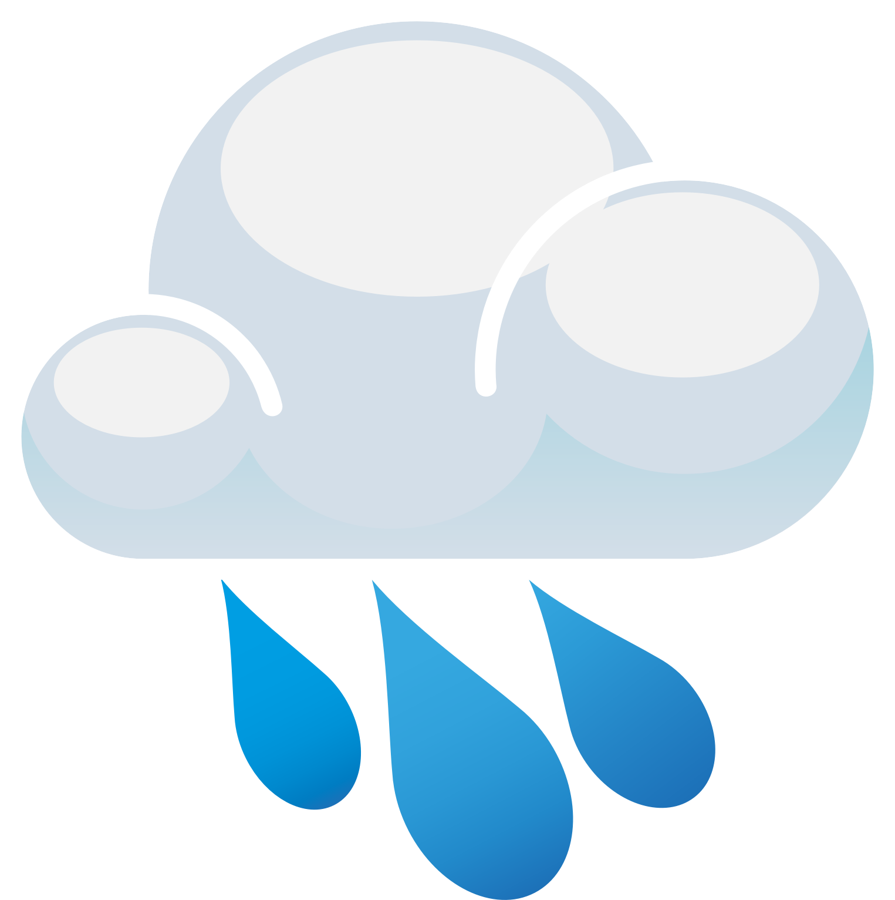
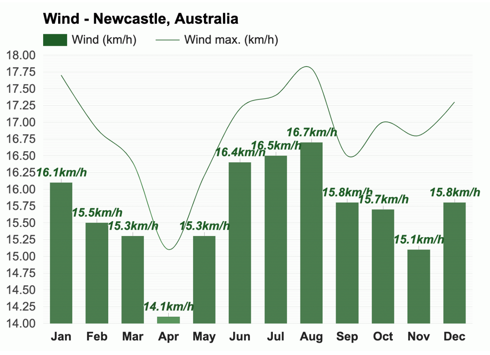

Temperature 
The warmest month in Newcastle, Australia, is January, with an
average high-temperature of 26.7°C (80.1°F) and an average
low-temperature of 20.3°C (68.5°F).
With an average high-temperature of 16.3°C (61.3°F) and an average
low-temperature of 10.9°C (51.6°F), July is the coldest month in
Newcastle.
The months with the most sunshine in Newcastle, Australia, are
November and December, with an average of 9.8h of sunshine, and June
has the least sunshine of the year, with an average of 5.8h of
sunshine.
Rain
Throughout the year, in Newcastle, there are 160.9 rainfall days,
and 620mm (24.41") of precipitation is accumulated.
The months with the lowest humidity are August and September, with
an average relative humidity of 69%. August is the month with the
least rainfall in Newcastle. Rain falls for 10.2 days and
accumulates 34mm (1.34") of precipitation.
February is the most humid month, with an average relative humidity
of 77% as it is the month with the most rainfall in Newcastle. Rain
falls for 14.7 days and accumulates 79mm (3.11") of precipitation.
Wind

* The above information is sourced from Weather-At. Take a
visit for
more information...
Population
390,519 (City)
Median Age 41
Ancestry
The most common ancestries in Newcastle were English 28.6%,
Australian 19.5%, Irish 11.1%, Scottish 9.9% and German 3.8%.
Country of birth
In Newcastle, 69.1% of people were born in Australia. The most
common countries of birth were England 3.4%, New Zealand 1.4%,
United States of America 1.3%, Germany 0.8% and China (excludes
SARs and Taiwan) 0.8%.
Religion
The most common responses for religion in Newcastle were No
Religion 31.1%, Catholic 21.7% and Anglican 19.2%.
* The above information is sourced from
Australian Bureau of Statitics. Take a visit for
more information...
Skate and BMX
Over the last 20 years there has been a significant growth in the
interest and participation of action sports such as skateboarding
and BMX.
Albury Skate Park
Thurgoona Skate Park
Springdale Heights Pump Track
Boat ramps
There are five boat ramps in the Albury region, with access to
either the Murray River or Lake Hume. All ramps offer easy access to
the water as well as nearby services.
Lake Hume Village Boat Ramp
Kremur Street
Mungabareena Reserve
Walking and cycling trails
Albury has more than 50 kilometres of interlinked on and off-road
trails, offering walkers and cyclists of all ages, safe and
enjoyable access to our natural environment and places of interest.
Heritage Walk
Nail Can Hill / Ridge Trail
Bungambrawatha Creek Trail
Rainforest Walk
* The above information is sourced from
Albury City Government. Take a visit for
more information...